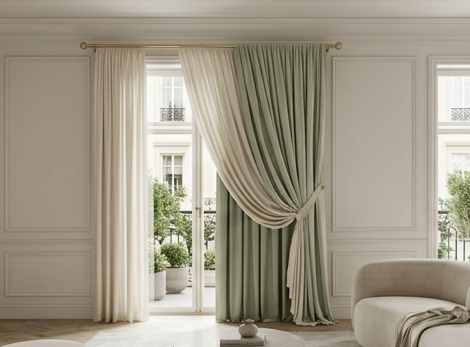
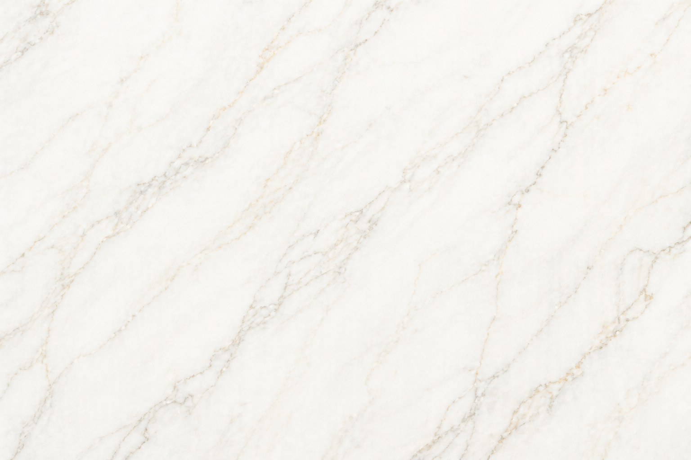

L’art de sublimer vos espacesLe beau se joue
Le beau se joue
dans le détail.
Des rideaux pensés pour votre intérieur, des matières sélectionnées avec exigence et un savoir-faire qui donne vie à vos envies.
Explorer la collection ↗
Maison
Yazid
Depuis toujours
Yazid
Depuis toujours
01Écoute & conseil
02Confection sur mesure
03Finitions soignées
L’univers Maison Yazid
Une élégance qui vous ressemble.
Chaque fenêtre mérite une attention particulière. Découvrez une sélection imaginée pour créer des espaces chaleureux, harmonieux et personnels.

Le sens du détailLa matière.
La matière.
La lumière.
Votre signature.
Un beau rideau ne se contente pas d’habiller une fenêtre. Il transforme la lumière, apporte du relief et révèle l’atmosphère d’une pièce.
Demander un conseil ↗